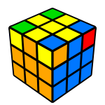

Step 1
Make the white cross and make sure that the edge is paired up with the right middle pieces

Step 1
Make the white cross and make sure that the edge is paired up with the right middle pieces
Step 2
Put the white corner pieces to its corresponding places.
Step 3
put the second layer edge on top of the same middle piece and do either (U R U' R' U' F' U F) for putting it on the right, or (U' L' U L U F U' F') for putting it on the left.

Step 4
Here you need to make a cross in the yellow part, you need to follow these sets algorithem (F R U R' U' F')
Step 5
Now that the yellow cross has been made, you now need to pair the edges by doing this algorithem (R U R' U R U2 R')
Step 6
If 1 corner is correct, hold it in the front/right (if 0 are correct, hold any corner in the front/right). Then do this algoriothem (U R U' L' U R' U' L)

Step 7
Hold the cube so that the yellow part is facing down, then do these algorithem for all 4 edge parts (R U R' U') until the corner is solved
